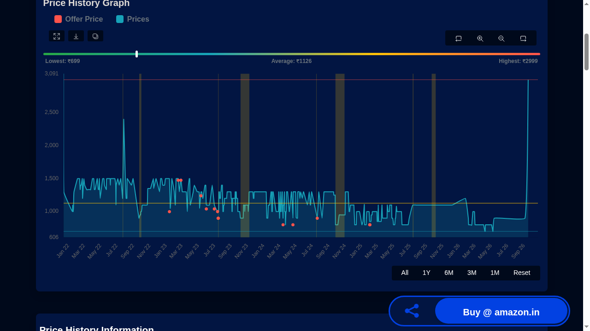

PriceHistory: check a product's price history before you buy
A discount banner only shows the price in front of you. PriceHistory shows the recorded prices of the same product over months and years, from one pasted link, free and with no account. We tested it on real product links; here is what we found, including where the data can lag.
Quick facts
- Free price-history lookup for Indian e-commerce: paste a product link, name or ASIN and see its recorded price chart. No account needed for a lookup.
- Dedicated tracker pages for Amazon India and Flipkart, plus an Amazon US tracker and deals sections.
- Each tracked product's page shows the lowest-recorded price with its date, the average and highest, and how many days the product has been tracked.
- In our test, a boAt earbuds link returned a full chart instantly, with a lowest-recorded price of ₹699 in tracker data stamped 17 September 2026.
- Tracker data can lag the live store price; the product page we tested was stamped about five weeks before our check.
- Products new to the database are queued ("Product Added to Track!") instead of showing instant history (we hit this with a Flipkart phone link).
- Price alerts are promoted, including back-in-stock alerts via the site's app; we tested only the no-account web lookup.
What it does
PriceHistory (pricehistory.app) answers a question a price tag alone cannot: how has this product's price moved over months and years? You paste a product link, a name or an ASIN into the search box, and for products already in its database it shows the recorded price history as an interactive chart with All, 1-year, 6-month, 3-month and 1-month filters, milestone prices (lowest with date, average, highest with date), how many days the product has been tracked, prices across variants of the same model, and a link out to the store. There are dedicated tracker pages for Amazon India and Flipkart, an Amazon US tracker, deal listings, a browser extension, Android and iOS apps, and Telegram and WhatsApp channels.
One thing to keep in mind throughout: these are the tracker's own recorded figures, each page carries a date-time stamp, and the data can lag the store's live price. Treat it as a history display, not a live quote.
Our test: years of price history from one pasted link

We pasted an Amazon India link for boAt Airdopes 141 earbuds into the homepage search box. Within seconds the product page loaded, with no sign-up. The page header listed a price of ₹2,999 (shown as 33% off ₹4,490), a lowest-recorded price of ₹699 (8 April 2026), an average of ₹1,132 and a highest of ₹4,490 (14 December 2021), with "1775 days price tracking" behind those figures, all in tracker data stamped 17 September 2026, about five weeks before our check.
The chart itself has its own labels, and they differ slightly from the header: lowest ₹699, average ₹1,126, highest ₹2,999. One possible explanation is the plotted window, which starts in January 2022 and would exclude the ₹4,490 point dated December 2021, but the site does not explain the two label sets, so we report both exactly as displayed without asserting a reason.
Two caveats from the test. First, freshness: because the data was stamped about five weeks before our check, a price shown on the tracker is a recent historical record, not the store's live price today. Second, coverage: when we pasted a Flipkart link for a POCO phone that was not in the database, the site displayed a "Product Added to Track!" notice instead of instant history. What exactly happens on the site's servers after that message we cannot say; the visible result was that no history was available for that product at that moment. Popular, long-listed products appear to have the deepest history.
How to use it
- Open pricehistory.app and paste a product link (or a name, or an ASIN) into the search box, then press Enter.
- Read the milestone numbers first: lowest with its date, average, and highest, and note the page's data stamp.
- Use the 1Y or 6M filter on the chart to see the recent range rather than old launch pricing.
- If the product is new to the database, expect a "Product Added to Track!" notice instead of instant history.
- Compare the store's live price against the tracker's historical figures, and always confirm the final price on the store page itself, since tracker data can be days or weeks old.
Limits and frictions
- Data can lag: our tested product's data was stamped about five weeks before our check, so treat displayed prices as history, not a live quote.
- Not every product is tracked yet: unlisted products showed a "Product Added to Track!" notice in our test instead of instant history.
- The page's all-time summary numbers and its chart labels can differ (in our test: highest ₹4,490 vs ₹2,999, average ₹1,132 vs ₹1,126); the site does not explain why.
- Price alerts and back-in-stock alerts are promoted for the site's app and extension; we did not test those, only the no-account web lookup.
- Price history shows what was recorded before; it cannot predict future prices.
Privacy
The web lookup needs no account, no email and no personal details: you paste a product link and read a chart. The service is free and shows deal listings with outbound store links. We did not audit its data practices; the apps and extension are separate installs with their own permissions, which we did not test.
Why it matters for Indian users
A discount percentage on its own says little without the product's own price history behind it. A quick paste into PriceHistory shows the recorded range: in our test, earbuds displayed at ₹2,999 sat next to a lowest-recorded ₹699 and a ₹1,132 average in the tracker's data (stamped 17 September 2026). Those are historical figures, not a live store quote, but they give you context a sale banner leaves out when you are weighing a purchase on Amazon India or Flipkart.
Sources checked 23 October 2026: the PriceHistory homepage and Amazon tracker page, and our own no-account tests with Amazon India and Flipkart product links, linked below.